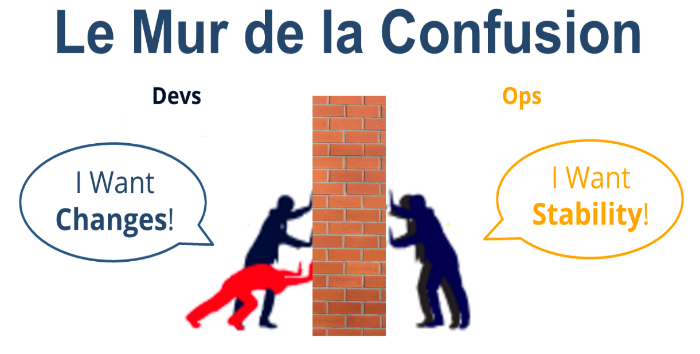
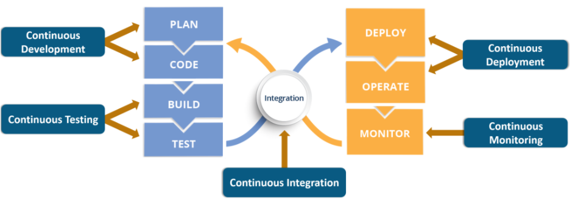
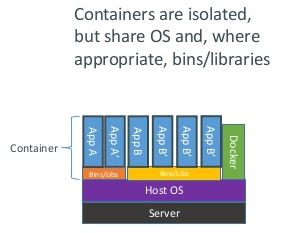
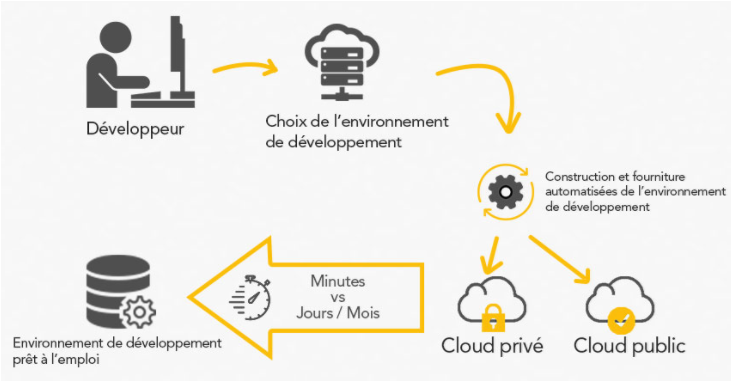

De nos jours, la transformation numérique à laquelle nous assistons implique un remodelage complet de tous les aspects d'une entreprise ainsi que
de sa stratégie, elle passe ainsi nécessairement par le changement de matière première, de méthodologie de collaboration et de compétences.
Et comme l’a bien décrit Klaus Schwab ((WEF) : « “In the new world, it is not the big fish which eats the small fish, it’s the fast fish which
eats the slow fish», c’est la vélocité qui fait la différence dans ce nouveau monde. D’où la nécessité pour les entreprises IT d’adopter une
philosophie leur permettant de résoudre les problèmes de gestion de projets, d’assurer une meilleure collaboration entre les métiers, d’accélérer
la livraison d’un produit ou d’un service et de répondre vite aux retours clients. Et par conséquent, améliorer la manière dont une entreprise
apporte de la valeur à ses clients, fournisseurs et partenaires.
Si au niveau des développements de logiciel, l’introduction de l’agilité a accéléré le développement et a introduit une augmentation de la
fréquence de déploiement, la gestion des opérations d’intégration, de déploiement et de livraison a pris du retard. On peut dire alors
que DevOps est né pour appliquer le principe de l’agilité, non seulement sur la phase de développement, mais sur tout le processus de production,
de la planification à la livraison du produit, permettant ainsi aux entreprises, de gagner en vélocité. Il s’agit donc d’un concept nouveau qui
continue d'émerger et un processus métier essentiel, et non d’une tache informatique simple.
L’adoption de cette approche est le fruit de la transformation numérique comme le montre une étude IDC/Automic sur le DevOps réalisée au second
semestre 2015 auprès de 201 entreprises françaises. Parmi les résultats, on constate que pour 52% des entreprises interrogées, « la transformation
numérique » est la principale raison invoquée pour l’adoption d’une approche DevOps. L’étude détaille que 21% de ces entreprises qui ont adopté
cette approche, mettent en avant le contexte de leur marché, 21% le time-to-market, et 19% le besoin en développement agile.
Ce choix est justifié par le fait qu’il est difficile avec l’approche traditionnelle, qui implique des mises à jour majeures, mais rares, ayant de
longs cycles de développements et de tests, de répondre aux contraintes réglementaires, liées au contexte du marché évoluant à grande vitesse.
Ainsi, en adoptant DévOps, les mises à jour et les correctifs logiciels incrémentiels parviennent aux utilisateurs plus rapidement et plus
facilement qu'avec les cycles traditionnels de mise à jour, ce qui raccourcit les délais de déploiement et par conséquent garantie à l'entreprise
un avantage concurrentiel supplémentaire.
Enfin, DevOps est désormais considéré comme la fin de la pratique du 20ième siècle consistant à écrire des scripts statiques pour le build et le
déploiement.
QU'EST CE QUE DEVOPS, SES ORIGINES, ET SA CARACTERISTIQUE
Définition :
DevOps est un état d’esprit, une approche commune d’un problème. Il est la contraction des termes anglais « development » et « operations IT ».
Parmi les dizaines définitions essayant d’expliquer ce mouvement, le blog.Xebia.fr choisit : « DevOps est la pratique où les ingénieurs de développement
Dev) et d’exploitation (Ops) participent ensemble à l’intégralité du cycle de vie de services : de la conception au support de production en passant par
le développement. »
Il s’agit d’un ensemble de pratiques et d’outils permettant d’associer développement et opérations puisque dans les entreprises IT, on distingue entre deux types
de personnes : celles qui créent et développent (Devs) et celles qui exploitent en production (Ops).
Les Devs : désignent toute personne impliquée dans la fabrication du logiciel avant qu’il n’atteigne la production : les développeurs, les gestionnaires de produits,
les testeurs, les Product Owners et les QAs.
Les Ops : Il s’agit de toutes les personnes impliquées dans l’exploitation et la maintenance de la production: les ingénieurs systèmes, les DBAs,
les ingénieurs réseaux, le personnel de sécurité, etc.
Entre ces deux métiers, tout est différent ; le vocabulaire, les technologies, le niveau de couche de travail, les responsabilités, mais aussi
les méthodes de travail…
Les Devs cherchent l’innovation et produisent de nouvelles fonctionnalités, les Ops, de leur part, veillent à la stabilité, la rapidité et la
réactivité du système accédés par l’utilisateur ou le client final. Cette situation est illustrée par « Le Mur de la Confusion ».
 Source : http://blog.xebia.fr/2017/04/21/introduction-a-devops le 08/03/2015
Il en résulte que les deux peuvent avoir l’impression de ne pas aller dans le même sens, ou que les uns soient en avance par rapport aux autres
dans le cas où les configurations et mise en production prennent plus de temps que le développement de la fonctionnalité, ou qu’il n’y ait pas
une synchronisation entre les deux comme dans le cas où la méthode V est adoptée ; ce n’est qu’après avoir développé toute l’application et
l’avoir testée qu’elle pourra passer en production. Toutes ces situations peuvent causer une frustration et nuisent par la suite à la productivité
et la livraison. Or, ils ont un but commun qui est de répondre aux besoins du client et livrer rapidement pour garantir sa satisfaction.
D’où la naissance de DevOps qui vise alors à unir ces deux forces, grâce aux pratiques et outils sur lesquels il repose.
Unir la création et la production, les développeurs et les administrateurs.
Il se base sur l’automatisation et la culture de préconiser une meilleure communication entre les équipes de développement et
d’exploitation afin d’améliorer la conduite de projet.
Origines :
L’histoire de DevOps a commencé avec l’ingénieur Patrick Debois ayant à cette époque-là une expérience de 15ans dans le domaine informatique.
Durant cette période, Il avait exercé plusieurs métiers, à savoir : Développeur, administrateur, ingénieur réseaux et chef de projet.
En 2007, il travail sur le test d’un grand projet de migration d’un dataCenter. Il y était amené à collaborer et avec les équipes de développement,
et avec les équipes opérationnelles. Il fut alors frustré par le contraste entre les façons de travail des deux et par les conflits submergés.
Il a ainsi touché le besoin de trouver un moyen d’amélioration de cette collaboration et communication. En 2009, Il assite à la présentation
« +10 deploys per day : Dev and Ops Cooperation at Flickr », animée par les deux ingénieurs John Allspaw et Paul Hammond,
lors de la conférence O’Reilly. Tellement inspiré par cette présentation, il décide d’organiser, en Octobre 2009 en Belgique,
sa propre conférence « DevOpsDays ». Depuis 2010, le hashtag Twitter #devops constitue la source essentielle d’informations liées au mouvement.
L'automatisation au coeur de DevOps :
Au sein de chaque entreprise, les applications constituent la composante essentielle de l’innovation et de la compétitivité.
Les équipes informatiques se trouvent alors face à la nécessité de délivrer en continu de nouvelles fonctionnalités répondant
aux besoins des métiers, tout en gardant les niveaux de service et préservant la sécurité et l’intégrité des systèmes.
Une étude IDC réalisée en avril 2015, montrait déjà que pour 60% d’entreprises américaines (Fortune 100), l’automatisation
est la première étape d’une démarche DevOps. L’enquête IDC pour Automic confirme qu’il est en pareil en France. En outre, elle met
en lumière qu’il n’est pas question pour ces entreprises de remplacer leur patrimoine applicatif pour implémenter DevOps, mais plutôt,
69% d’entre elles souhaitent exploiter ce dernier pour optimiser leur processus. L’étude montre aussi que 48% des entreprises,
ayant déjà lancé leur initiative DevOps, se sont tournées vers des solutions d’automatisation. Ce qui montre explique que « DevOps »
et « automatisation » vont ensemble.
D’un autre côté, Il est vrai que le développement agile, désormais largement adopté, est généralement accompagné d’un niveau d’automatisation
suffisant pour permettre l’intégration continue – notamment avec des outils tels que Jenkins. Mais le succès d’une initiative DevOps
demande des niveaux d’automatisation plus poussés, autorisant le test continu et le déploiement continu pour atteindre réellement le
but ultime de DevOps consistant en la livraison continue des applications.
LES PRINCIPES DE DEVOPS, SES CONCEPTS ET SES BENIFICES?
Les principes de DevOps
DevOps propose alors un cycle de vie qu’on peut résumer avec l’acronyme anglais: CALMS.
• Culture : Plus qu’un simple changement ou outils, il s’agit d’une culture organisationnelle à instaurer en entreprise.
• Agile : Une grande source d’inspiration pour DevOps est l’Agilité, et l’un des points-clés agiles dit : « Les individus et
les interactions plutôt que les processus et les outils »).
• Automation : puisque de nos jours, les entreprises peuvent avoir des milliers de serveurs. Il faut Automatiser autant que possible.
• Lean : Il s’inspire également de l’approche « Lean » qui vise à améliorer l’ensemble de flux et non seulement certains
points dans la pipeline de production.
• Measurement : qui est indispensable pour l’amélioration. Dans les organisations informatiques traditionnelles,
la surveillance des infrastructures faisait partie des résponsabilité des Ops, maintenant Devops favorise
la participation des Devs pour aider dans le monitoring.
• Sharing : aligner toutes les parties prenantes pour qu’ils travaillent ensemble sur les mêmes objectifs.
Pour ce faire, leurs opinions doivent être entendues.
Les Concepts de DevOps
DevOps est un mouvement qui vise à rassembler un ensemble de bonnes pratiques dans le but de
délivrer un produit d’une façon rapide et efficace. Il serait nécessaire de comprendre les phases du cycle de vie de DevOps.
 Les concepts de DevOps. Source : https://www.edureka.co/blog/devops-tools consultée le 16/03/2015
1. L’intégration continue (CI)
La première étape pour l’industrialisation des développements consiste à mettre en place une intégration continue,
qui est considérée comme pièce maitresse de l’usine de développement.
Il s’agit de la pratique qui permet aux développeurs de vérifier leur code et tester son intégration avec le code existant
en respectant les dépendances. Elle consiste à effectuer automatiquement et en permanence des tests sur une branche de code
à chaque fois que le développeur y publie une nouvelle fonctionnalité.
Désormais, le serveur d’intégration continue (comme Jenkins, Baboo ou autre) s’avère nécessaire à tout projet de développement
logiciel car il assure la bonne compilation du code, le jeu des tests unitaires, le packaging, le déploiement et l’exécution des
tests dans un environnement d’intégration.
Il est en outre indépendant des configurations spécifiques aux postes de développeurs pour éviter tout contournement des règles de
base de qualité (assurées par SonarQube, par exemple) et garantir la répétabilité des processus.
Le code packagé est archivé dans un référentiel central. Cette archive sera utilisée pour le déploiement sur l’ensemble des environnements,
y compris la production. Son but est de fiabiliser les activités de développement, réduire la durée et l’effort requis par chaque
épisode d'intégration et être en mesure de fournir une version du produit pouvant être livrée à tout moment. Une fois mise en place,
elle autorise l’organisation projet
à pousser l’industrialisation au-delà des frontières de l’équipe de développement.
Donc plutôt que de laisser l’intégration après la fin de la phase de développement de toutes les fonctionnalités, ce qui pourrait présenter
des problèmes dont on ne connait pas la source, l’intégration continue facilite la détection des problèmes au fur et à mesure
du développement du produit et ce, à l’aide . Les figures ci-dessous illustrent la différence.
Sans intégration continue. Source : http://igm.univ-mlv.fr consultée le 08/03/2015
Avec l'intégration continue. Source : http://igm.univ-mlv.fr consultée le 08/03/2015
Avec l'intégration continue
Nous pouvons voir 3 rôles importants qui sont délégués à ces serveurs :
• centralisation : permettre à un ensemble de personne de bénéficier d'informations communes.
• automatisation : permettre d'effectuer l'ensemble des phases de productions (compilation, tests, déploiement...)
sans ou avec très peu d'intervention d'un humain.
• historisation : permettre de garder les productions précédentes et voir l'évolution des productions.
2. Le déploiement continu
les actions de déploiements comme la mise à jour de bases de données ou le déploiement dans un serveur d’applications.. étaient
auparavant réalisées manuellement par les Ops (l’équipe d’exploitation), il est désormais possible de les automatiser afin de fiabiliser
le processus de déploiement et augmenter la fréquence des livraisons qui seraient par la suite validées par le client.
Ces déploiements automatisés sont désormais réalisés à l’aide de scripts de déploiement qui permettent, si l’on souhaite,
la recréation complète de l’environnement cible (via des outils et langages comme Puppet, Chef ou Docker). Mais ces scripts ne peuvent pas
être réalisés sans la collaboration entre les Devs et les Ops.
Ces scripts et paramétrages sont sauvegardés dans un gestionnaire de sources (GIT par exemple), de la même manière que l’on sauvegarde le code.
Ainsi, le déploiement en intégration peut se faire automatiquement et fréquemment, pour que les développeurs puissent tester
leur travail dans un environnement proche de celui de production.
3. La livraison continue (LI)
Elle vise à automatiser le processus de mise en production du code après les tests et la validation.
Elle permet, grâce à des versions fiables et à faible risque, d’adapter de façon continue les logiciels et ce,
en fonction des réactions des utilisateurs, des évolutions du marché et des changements de stratégie commerciale.
Les tests, le support, le développement et les opérations fonctionnent ensemble comme une seule équipe de livraison pour
utomatiser et rationaliser le processus de construction, de test et de publication.
Les bénifices de DevOps
Dans l’approche traditionnelle, les développeurs s’intéressaient au code sans se soucier de l’impact qu’il peut avoir
sur la production. De leur part, les opérationnels qui veille sur la stabilité des infrastructures, ralentissent les mises
en production et considère le code du développeur responsable en cas de l’insatisfaction des utilisateurs. L’adoption de DevOps
permet de gérer les responsabilités et favorise l’implication de l’ensemble des acteurs de la chaine. D’un autre côté, l’approche
DevOps déconseille les corrections et versions faites sur de longs cycles de développements et de tests, et permet de publier de
petites mises à jour, de façon plus fréquentes, ce qui réduit les erreurs et renforce les relations critiques entre les équipes
d’ingénierie, d’assurance qualité et l’IT.
Ainsi, en adoptant DevOps , l’entreprise réduit le cycle et le coût de mise en production, travaille avec une approche plus fragmentée
(en répartissant le travail en des petites évolutions, ainsi les mises à jour deviennent transparentes, ce qui nous permet de détecter
la source de problème au cas où il y’en a). Elle résout le problème des responsabilités de l’équipe et assure une amélioration continue
du produit, ce qui lui permet de répondre plus rapidement aux besoins des clients et être plus compétitive. Et avec DevOps, même les
développeurs doivent considérer la sécurité comme une part intégrante de leurs activités.
LES OUTILS DE DEVOPS
DevOps rassemble une panoplie d’outils qui répondent à des besoins différents pouvant être regroupés comme suit :
• Outils de déploiement
• Outils de configuration
• Outils de surveillance
• Outils d’automatisation des tests.
Nous détaillerons dans ce qui suit deux technologies très tendances en ce moment : Docker et Jenkins.
Docker
Il est considéré comme le fer de lance du mouvement DevOps. Dévoilé en mars 2013 et initialement développé par un ingénieur français, Solomon Hykes,
il permet d’isoler des applications en créant des environnements (appelés containers). Pour ce faire, il repose sur le kernel Linux et sur le composant
cgroups qui a pour objectif de gérer les ressources (utilisation de la RAM, CPU entre autres).
L'idée est de lancer du code dans un environnement isolé et ce, sur le même système d’exploitation.
 Le partage du même OS par les containers de Docker. Source : www.wanadev.fr le 08/03/2018
Il s’agit d’un outil orienté DevOps avec une grande croissance. Elle permet d’orchestrer une industrialisation des environnements.
Il faudrait donc bien définir la configuration système des différents conteneurs qu’on souhaite créer et ce, en définissant les composants à
intégrer et en créant par la suite les images de conteneurs. Cette étape nécessite la collaboration entre les développeurs et les opérationnelles.
Les images crées sont alors stockées sur la plateforme Docker Hub (https://hub.docker.com/), et sont utilisables directement par les développeurs
travaillant avec des machines exécutant Docker.
Ainsi, Docker nous assure un environnement de développement absolument identique, dans lequel travaillent plusieurs développeurs en utilisant
les mêmes conteneurs. Cela permet d’éviter les problèmes de configurations liés à une différence de versions entre les composants installés
par exemple, ou de la configuration système nécessaire au projet plus généralement. Ce qui nous facilitera la mise en place d’un environnement
pour les développeurs d’une façon simple et rapide et nous résoudra le problème de perte de temps et d’énergie dus aux problèmes de configuration
et de compatibilité, très émergeants en entreprise.
Jenkins
Si Docker permet de gérer la problématique d’uniformité des environnements, Jenkins fait partie des outils importants de l’univers
des technologies DevOps qui permettent d’améliorer la qualité et la sérénité des livraisons en ajoutant les couches d’intégration continue et de déploiement continu.
Jenkins est un outil open source d'intégration continue qui est écrit en Java. Il fonctionne dans un conteneur de servlets tel qu’Apache Tomcat, ou en mode
autonome avec son propre serveur Web embarqué et permet de définir une chaîne de compilation, tests et déploiement automatisée. Avec l’intégration
continue déjà évoquée plus haut, on peut dire que cet outil nous donne la possibilité de voir le problème aussi rapidement et dès que le codes est écrit,
bien avant la date de livraison client. L'idée étant, comme expliqué dans le principe d’intégration continue, de vérifier le comportement de l'ensemble des
modules d'un logiciel dans l'environnement identique à celui de la livraison et ainsi voir les problèmes qui peuvent être liés soit à l'environnement soit à
des dépendances du code. Ce processus n’aura de sens qu’en lançant à chaque fois des tests unitaires et d'intégrations qui nous permettront de détecter
les erreurs introduites par les dernières modifications du code. Jenkins (ou Hudson) est alors un produit qui répond à ces critères et est actuellement
très répandu dans le marché et le monde des entreprises et est facile à intégrer dans un environnement existant.
Seulement, son IHM n’était pas simple à utiliser, la configuration de jobs ne se fait pas de manière reproductible entre différents
environnements. • Les pipelines de Jenkins
Afin de résoudre ce problème, Jenkins a introduit les pipelines la version 2. Ces Pipelines permettent de décrire au sein d'un fichier Groovy,
l'ensemble des étapes qui seront utiles à la fabrication du logiciel en question. Ce fichier appelé JenkinsFile est présent directement avec le code source.
D’où l’avantage des pipelines qui nous évitent désormais, de configurer des jobs complexes directement sur l’interface Jenkins. • Le Jenkinsfile
Il est écrit en Groovy et permet de découper la pipeline en « stages » ou étapes. Parmi ses utilités, il nous donne la possibilité de
lancer des commandes sh, faire du git (checkout, multibranche), redémarrer jenkins, allouer des workspaces à n'importe quel "stage"
et le nombre souhaité, permettre à l'utilisateur d'approuver à certaines étapes de la pipeline via le "input step",
avoir une visualisation graphique et compréhensible de sa pipeline, paralléliser les étapes de celle-ci et enfin,
l’utilisation de try..catch pour gérer les erreurs susceptibles de survenir.
La valeur ajoutée réside ainsi dans la souplesse et la visualisation de l’intégration continue en un coup d’œil.
LA MISE EN PLACE DE DEVOPS EN ENTREPRISE
À fin qu’un service IT d’une entreprise puisse réussir la reconversion culturelle d’un sevice informatique vers un modèle DevOps,
Alex Barrett, chef-exécutif en infrastructures modernes, fait le point sur les changements à mettre en place.
En équipe
Tout d’abord, un ajustement organisationnel au niveau de l’équipe, puisque l’approche DevOps implique la collaboration entre les opérationnels qui déploient et
cumulent une expérience pratique des opérations de production. Et les développeurs qui se chargent de développer et tester leurs produits.
Cette collaboration permet aux premiers de partager avec les deuxièmes cette expérience pour que ces dernier écrive un code de meilleure qualité dès le départ.
La conversion en DevOps s’avère difficile pour les entreprises, souhaitant adopter les pratiques DevOps. Elles peuvent commencer par la réation d’une
équipe DevOps correspondant à des applciations précises. L’idée est de composer cette équipe en y rassemblant des collaborateurs ayant au moins deux compétences
pour qu’il y ait plsu de synergie dans la collaboration. Par exemple, Chez Red Hat, le projet interne DevOps « Team Inception » a pris la forme suivante :
un chef d'équipe, un responsable du produit et un
scrum master, auxquels s'ajoutent quatre ingénieurs compétents en administration système, en sécurité de l'information, en développement et
en mise en production.
En développement
Il faut d’abord définir la méthode de développement car elle constitue une pierre angulaire de l’environnement Devops car on se basera sur la
méthode pour définir les buts, les tâches et le cycle de développement). Il s’agit généralement d’une méthode agile, comme l’explique bien
Evan Powell, directeur général de StackStorm, une startup DevOps : « DevOps sans développement agile n'aurait aucun sens ».
L'intégration, le déploiement et la livraison continus forment, comme expliqué, un autre pilier de DevOps. Ainsi, l’implémentation des
différents outils est nécessaire pour garantir l’automatisation de l’intégration et tests sur une branche de code et automatiser le
processus de livraison par la suite.
Pour que cela soit possible, le code doit être stocké dans un référentiel de code source ayant des fins de sauvegarde et de contrôle de version.
En ce moment, l’outil de gestion de sources le plus répondu est GIT. Il donne à des équipes de développement éparpillées dans le monde
entier des fonctionnalités de collaboration et des workflows basé sur des règles. En plus, il prend en charge des outils largement répandus
: environnements de développement intégré (IDE, Integrated Development Environment), intégration continue/développement continu et outils
de test.
L'infrastructure as a code
Avec l’approche de DevOps, les référentiels de code comme Git contiennent, en plus du code, des modèles et des scripts détaillés de configuration créés
à l'aide d'outils de gestion de configuration comme Chef. Cette pratique de configurer à l’aide du code a pris le nom de
« infrastructure sous forme de code » et a été engendrée par l'automatisation de la configuration et du déploiement de l'infrastructure.
« Autrefois, on configurait tout à la main mais c'est difficile en cas d'évolution rapide, constate Jonathan Chauncey, ingénieur logiciel chez
l'éditeur. La configuration manuelle de l’infrastructure s'est révélée problématique pour le débogage de problèmes qui touchent toute une
pile de serveurs. En plus, si elle tombe à deux heures du matin, il serait difficile, voire impossible, pour l’équipe de la reconstruire
tout de suite.
Avec cette nouvelle pratique, l’entreprise stockes ses recettes d’infrastructure dans le référentiel Git, cette dernières
s'intègre aux autres processus DevOps, c'est-à-dire les tests et le déploiement. Autrement dit, elles sont testées et déployées
dans le cadre des mêmes processus d'intégration et de déploiement continus qui consistent à exécuter plusieurs dizaines de fois
par jour livre des fonctionnalités logicielles. « Quelle que soit la modification, qu'il s'agisse du code logiciel ou de
l'infrastructure, on utilise le même processus » explique Jonathan Chauncey.
Alain Gaeremynck l'affirme : « nous sommes favorables à l'infrastructure sous forme de code et à l’infrastructure jetable". Au lieu de construire notre infrastructure une fois puis de la surveiller et d'en assurer la maintenance consciencieusement, nous détruisons tout pour le reconstruire à chaque fois [que nous sortons une nouvelle version]. »
Le cloud et DevOps
Quand il s’agit de créer de la valeur ajoutée en entreprise via l’informatique, le Cloud et DevOps, bien qu’ils soient indépendants,
représentent des stratégies qui se renforcent mutuellement.
Traditionnellement, dans le but d’effectuer les développements et leur exécution, les développeurs avaient besoin de ressources qu’ils
demandaient aux équipes d’exploitation. Ces dernières leur mettaient à disposition l’infrastructure dans un délai de plusieurs jours
voir plusieurs semaines. Les entreprises travaillent désormais avec le cloud qui rend l’approvisionnement d’une infrastructure très
facile et rapide et ce, à l’aide de la mise en place des processus automatisés.
 Source : https://artkeos.com/lien-entre-devops-cloud/ consultée le 16/03/2018
Dans le cadre de la transition de produits à services, où les entreprises emballe le produit à livrer par un service.
Ainsi, des plateformes pré-intégrées existent aussi afin de fournir du PaaS (Platform as a Service) tel que Cloudfoundry,
OpenShift (RedHat).
Quand les entreprises combinent la synergie de DevOps au Cloud qui propose des services de IaaS(Infrastructure as a Service)
ou de PaaS (Platform as a service) adaptés aux besoins des développeurs, elles garantissent un lancement réussi de nouvelles
applications Par conséquent, elles créent de la valeur ajoutée.
« A mon avis, l'aptitude à consommer des ressources selon les besoins et à dissocier l'infrastructure du service principal
constitue un préalable à DevOps » affirme Ram Akuka. Ainsi, l'accès à une infrastructure Cloud sur laquelle demander et provisionner
des ressources fait partie intégrante de DevOps.